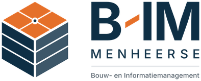

Live Tolk bewaart wat er gezegd wordt en de vertaling. Deze teksten worden automatisch verstuurd en gebruikt voor training en verbetering van de app.
Niet akkoord? Dan werkt de app gewoon, maar wordt er niets bewaard of verstuurd.
Live Tolk · B-IM Menheerse · versie


Er is een nieuwe versie van Live Tolk. Vernieuw de pagina om die te gebruiken.
Deze browser ondersteunt geen spraakherkenning. Open Live Tolk in Google Chrome.
Openen in ChromeStap 1 – vul eerst je naam in en kies je taal
Je krijgt een code. Geef die door aan je gesprekspartner (bijv. via WhatsApp of telefoon). Met dezelfde code kunnen jullie later opnieuw verbinden.
Gesprekscode
Wachten tot de ander deelneemt…
Vul de code in die je van de ander hebt gekregen.
Elke gesproken zin wordt met de vertaling bewaard en automatisch naar GitHub gestuurd, voor training en verbetering van de app. Vertel gesprekspartners dat hun tekst bewaard wordt.